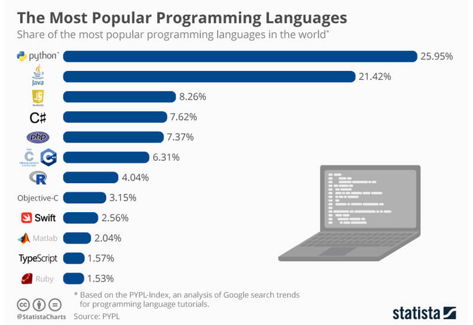
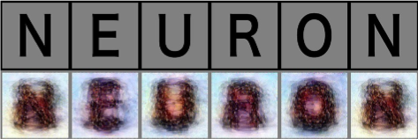

What is Programming?#
You may or may not be wondering, what programming actually is.
Simply put, it is the User (you) communicating with your computer through code.
Programming is the process of writing instructions that a computer can follow to complete specific tasks. These instructions, known as code, are written in a structured way using a programming language. Just like human languages have grammar and syntax, programming languages have rules that define how instructions must be written.
At its core, programming involves:
1- Defining a task – What do we want the computer to do?
2- Breaking it down – What steps are needed to achieve this?
3- Writing the instructions – Using a programming language to express these steps.
For example
num1 = 5
num2 = 10
num3 = 15
average = (num1 + num2 + num3) / 3
print("The average is:", average)`
Why should I care about programming?#
Recent development of Artifical Intelligence (AI) has made it clear, that advances in technology are rapid. There are AI models or agents that are able to perform language based tasks like (“Summarize this book chapter”, “write me a motivation letter for this student assistant position”, “help me express my feelings for that person I like”) with incredible outcomes. Their predecessor were computer vision models that were able to mirror human brain activity by showing similarity in their artifical activations. Although that topic (e.g., are AI models a good model of the human brain) is now highly debatable, click here for a superb bluesky thread on that.
To make a long story short, all these advances are based and solidified in programming. None of these advances were possible without programming, e.g. without instructing the computer to do a certain task. But do you need to be a rising neuroscientist star, that develops the newest AI model to use programming? No, not even close!
For starters, programming is a tool that you can use to make your life easier. It can help you with very basic tasks, like creating a new folder on your desktop. Of course, you can just make a right click within your directory and choose create new folder. In programming you could do something like
os.mkdir("MyNewFolder")
and you would basically get the same output. Okay, that is hardly an argument for learning a programming language. But what if you had to create 100 folders in your new directory, all named in the following scheme “Folder_0, Folder_1 (…) Folder_100. Doing that task manually would be.. tiresome, to say the least.
You might have guessed that in programming you could just do the same thing within seconds.
for i in range(100):
os.mdkir(f"MyNewFolder_{i}")
Programming really shines in these sort of use cases. It is a very neat way to communicate with your computer and to save yourself a lot of hours. Again, it does not stop there. Thinking of Data Analysis, knowing how to program gives you a huge advantage. While you would otherwise be stuck with GUI based tools like SPSS, where you are highly dependent on the available tools and options the GUI provides to you, knowing how to program really helps here.
Instead of clicking through menus and manually repeating analyses, you can automate workflows, handle large datasets with ease, and customize your analysis exactly as needed. Programming also opens the door to advanced techniques like machine learning, complex statistical modeling, and data visualization, which go far beyond the built-in options of GUI-based software.

Of course, this is not neccessarily limited to Python. R is another great option for that. By now you are probably wondering, why should I learn Python then?
Why Python?#
To start, there are a lot of programming languages out there. There is C, C#, java, javascript, julia, PHP, Rust, Swift and so on.
Now, why choose Python?

It is not only pretty popular, it is also a beginner friendly language. It has a easy to read syntax and learning the concepts of the language is rather easy.
Besides, it has a very active community, so should you encounter any difficulties, you are very likely to find a neat documentation or thread in which some has already discussed your problem (or, you just open a thread yourself!; for example: stackoverflow). Further, Python is open source. That means, that anybody that has a laptop can actually run it. You do not need to pay a dime for it.
If you are interested in machine learning and deep learning, python is also the best language to learn. Most models are actually coded in python.
Here are a list of cool projects coded in python (In no particular order!)


